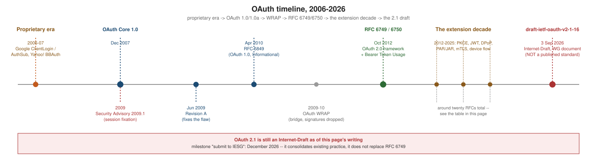

How OAuth Evolved
|
This content was generated with the assistance of AI and should be verified against the official documentation before being relied on in production. |
OAuth is not the product of a single design and a single release; it is nearly two decades of proprietary protocols, a standard, a rewrite, a walkout, and roughly twenty extension RFCs converging on a single in-progress consolidation. Understanding that history is not trivia — it explains why the protocol looks the way it does, why some of its parts (implicit grant, resource owner password credentials, bearer tokens with no proof of possession) are now considered mistakes, and why "OAuth 2.0" today means something considerably larger than RFC 6749 alone. This page walks the timeline in order; the figure below marks the same milestones visually.

The pre-OAuth proprietary era
Before there was a standard, every large service that wanted to let third-party applications act on a user’s behalf invented its own answer, and every answer required the third-party application to see the user’s password at least once:
-
Google ClientLogin (introduced 2006) had the client application collect the user’s Google username and password directly and exchange them for a long-lived authentication token via a POST request. The password passed through the client’s own code, in full, every time.
-
Google AuthSub (introduced 2006, alongside ClientLogin) improved on this for web applications: the user was redirected to a Google-hosted page to authenticate, and the client received an opaque token afterwards — much closer to what OAuth would formalise, but Google’s own proprietary redirect and token format, with no applicability outside Google’s own services.
-
Yahoo! BBAuth ("Browser-Based Authentication", introduced 2006) followed the same redirect-and-token shape as AuthSub, again as a Yahoo!-only mechanism with its own parameter names and its own token semantics.
Each of these solved the same problem for one vendor. A developer integrating with Google, Yahoo! and a third provider needed three separate, incompatible integrations, each trusting its own proprietary redirect dance, with no shared vocabulary for "client", "scope", or "token" and no shared security review. That fragmentation — not a single dramatic breach — is what motivated an open standard: enough vendors had independently arrived at "redirect the user, get a token back" that formalising the pattern once, with a jointly reviewed security model, was obviously worth doing.
OAuth Core 1.0 (December 2007)
A group of developers from Twitter, Google, Ma.gnolia and others — including Blaine Cook, Chris Messina and Larry Halff — began drafting a shared specification in 2006, and OAuth Core 1.0 was published in December 2007. It formalised the three-legged dance already visible in AuthSub/BBAuth (request a token, get the user to authorize it, exchange it for an access token) but added something none of the proprietary schemes had: a cryptographic request-signing mechanism, so that an access token could be used over plain HTTP without a bearer-token eavesdropper being able to replay it verbatim. The full mechanics of that signing scheme are covered on OAuth 1.0a, which the reader is encouraged to read before this page’s later sections, since several of the changes below are direct reactions to specific properties of 1.0’s design.
Security Advisory 2009.1 and Revision A (June 2009)
In April 2009, a session-fixation vulnerability was found in OAuth Core 1.0’s request-token flow: because the request token was not bound to the specific authorization request that obtained it, an attacker could obtain a valid, unauthorized request token, trick a victim into authorizing that token (for example by starting the flow themselves and handing the victim the resulting authorization URL), and then redeem the now-authorized token as their own — gaining access to the victim’s account at the target service. The OAuth community published Security Advisory 2009.1 describing the attack and coordinated a fix across implementers before public disclosure.
The fix introduced a new parameter, oauth_verifier: the authorization server, after the resource owner
approves the request token, generates a random verifier and returns it to the client alongside the now-approved
request token; the client must present that verifier when exchanging the request token for an access token.
Binding the approval to a verifier only the legitimate client receives closes the fixation window. This fix was
published as OAuth Core 1.0 Revision A in June 2009 — the "a" that gives
"OAuth 1.0a" its name, and the reason oauth_verifier appears in the three-legged flow described on
OAuth 1.0a.
RFC 5849 (April 2010)
OAuth 1.0a itself was subsequently published by the IETF as RFC 5849 in April 2010, as an Informational RFC — documenting existing, already-implemented practice for the community record rather than defining a new IETF Standards Track protocol. RFC 5849 is, functionally, OAuth Core 1.0 Revision A with the IETF’s editorial conventions applied; there is no material protocol change between the two.
OAuth WRAP and the removal of signatures
In parallel with RFC 5849’s publication, a separate proposal — OAuth WRAP ("Web Resource Authorization Profiles"), authored primarily by engineers from Microsoft, Google and Yahoo! in 2009-2010 — took a very different approach to the same problem: it dropped OAuth 1.0’s per-request cryptographic signatures entirely in favour of a simple bearer token presented over mandatory TLS. The reasoning was pragmatic: 1.0’s signature base string (see OAuth 1.0a) required exact, byte-for-byte agreement between client and server on URL and parameter canonicalisation, which was a real and recurring source of interop bugs across languages, HTTP libraries and proxies that silently reordered or re-encoded parameters in flight. WRAP was never published as an independent standard; it was folded into the working group that became OAuth 2.0 and its bearer-token model became that protocol’s foundation.
RFC 6749 and RFC 6750 (October 2012)
The OAuth 2.0 working group’s output shipped in October 2012 as two RFCs: RFC 6749, The OAuth 2.0 Authorization Framework, and RFC 6750, The OAuth 2.0 Authorization Framework: Bearer Token Usage. Together they define almost everything covered elsewhere in this reference: the four roles, the grant types (authorization code, implicit, resource owner password credentials, client credentials), the token endpoint, and the bearer-token model WRAP had prototyped.
RFC 6749 is explicitly a framework, not a fully specified protocol: it defines extension points (new grant types, new token types, new client-authentication methods) rather than closing them off, which is both its greatest strength — the entire extension decade below builds on those extension points without needing a new major version — and, as covered on OAuth 1.0 vs. OAuth 2.0, one of its most-criticised properties: two fully RFC-6749-compliant implementations are not guaranteed to interoperate.
The signatures debate and "the road to hell"
The move from OAuth 1.0’s signed requests to OAuth 2.0’s bearer tokens was contentious at the time, and nobody argued the point more visibly than Eran Hammer-Lahav, who had edited both OAuth 1.0 and, for most of its life, the OAuth 2.0 draft. In a widely read 2010 post, "OAuth 2.0 (without Signatures) Is Bad for the Web", Hammer-Lahav argued that removing per-request signatures traded a real (if imperfect) cryptographic integrity guarantee for a bearer-token model that depended entirely on TLS being correctly deployed everywhere, all the time, with no defence in depth if it was not.
That disagreement, compounded by a broader shift in the working group away from a single interoperable protocol toward an extensible framework meant to be profiled differently by each deployment, led Hammer-Lahav to resign his editorship in mid-2012, shortly before RFC 6749’s publication, in a post titled "OAuth 2.0 and the Road to Hell". His central complaint was that OAuth 2.0, as it shipped, was "a framework for building authorization protocols" rather than an authorization protocol itself — exactly the "closed spec vs. extension framework" trade-off examined on OAuth 1.0 vs. OAuth 2.0. History has been mixed on the underlying bet: bearer tokens over mandatory TLS did become the industry default, but the very absence of proof of possession he warned about is exactly what DPoP and mTLS-bound tokens exist to fix, more than a decade later.
The extension decade
RFC 6749’s extension points meant that, unlike OAuth 1.0, OAuth 2.0 could absorb new capability as separate RFCs rather than a new major protocol version. The following table lists the extension RFCs referenced elsewhere in this reference, in RFC-number order, with what each one added:
| RFC | What it added |
|---|---|
7009 |
Token revocation — a |
7519 |
JSON Web Token (JWT) — a compact, signed (and optionally encrypted) claims format that became the de facto structured access-token and ID-token representation. See JWT and JOSE. |
7591 / 7592 |
Dynamic Client Registration and Registration Management — letting a client register itself with an authorization server via an API instead of an administrative form. See Discovery, metadata and client registration. |
7636 |
PKCE (Proof Key for Code Exchange) — closes the authorization-code-interception attack against public clients by binding the code to a verifier only the original requester holds. See Authorization code and PKCE. |
7662 |
Token introspection — lets a resource server ask the authorization server whether an opaque token is still valid and what it is good for. See Opaque tokens, introspection and revocation. |
8252 |
OAuth 2.0 for Native Apps — mandates the system browser (or an in-app browser tab) over an embedded WebView for native and mobile clients. See Native and mobile apps. |
8414 |
Authorization Server Metadata — the |
8628 |
Device Authorization Grant — lets an input-constrained device (a TV, a CLI) delegate the interactive part of the flow to a second device. See Device authorization grant. |
8693 |
Token Exchange — a |
8705 |
Mutual-TLS client authentication and certificate-bound access tokens — sender-constrains a token to the client’s TLS certificate. See Sender-constrained tokens: DPoP and mTLS. |
9068 |
JWT Profile for OAuth 2.0 Access Tokens ( |
9101 |
JWT-Secured Authorization Request (JAR) — lets the entire authorization request be carried as a signed (and optionally encrypted) JWT instead of loose query parameters. See PAR, JAR and hardened profiles. |
9126 |
Pushed Authorization Requests (PAR) — moves the authorization request to a back-channel POST, returning a
short |
9207 |
Authorization Server Issuer Identification — the |
9396 |
Rich Authorization Requests (RAR) — structured, fine-grained |
9449 |
DPoP (Demonstrating Proof of Possession) — sender-constrains a token to a client-held key using a signed proof JWT on each request, without requiring mTLS infrastructure. See Sender-constrained tokens: DPoP and mTLS. |
9470 |
Step Up Authentication Challenge Protocol — lets a resource server demand a stronger authentication event
mid-session via a structured |
9700 |
Best Current Practice for OAuth 2.0 Security (BCP 240) — consolidates over a decade of attack research into a single set of mandatory-to-implement mitigations; the specification baseline named in this section’s disclaimer. See Security best practices. |
9728 |
Protected Resource Metadata — a discovery document for the resource server side, complementing RFC 8414’s authorization-server metadata. See Discovery, metadata and client registration. |
10017 |
OAuth 2.0 for Browser-Based Applications (BCP 212) — the hardened profile for single-page applications, formalising the backend-for-frontend pattern. See Browser-based apps. |
10027 |
Best Current Practice for Security of Cross-Device Flows — mitigations for the device-code phishing pattern uncovered after RFC 8628 shipped. See Device authorization grant. |
Two grants that RFC 6749 shipped with — the implicit grant and the resource owner password credentials grant — are conspicuously absent from later hardening: instead of being fixed, both are covered on Legacy implicit and password grants as constructs the ecosystem moved away from rather than patched.
The OAuth 2.1 consolidation
By the mid-2020s, "OAuth 2.0" in practice meant RFC 6749 read together with RFC 9700’s Security BCP, PKCE,
and a handful of the extension RFCs above — a correct but scattered picture that new implementers had to
assemble from twenty-odd documents. The OAuth working group’s response is
draft-ietf-oauth-v2-1 (at the time of writing, revision draft-ietf-oauth-v2-1-16, dated 3 September
2026): a consolidation, folding the accumulated best practice back into a single, self-contained document
that reads like RFC 6749 but reflects what a compliant deployment should actually do in 2026.
|
|
The draft’s three headline changes, each a direct response to lessons in the extension decade above:
-
PKCE becomes mandatory for every authorization-code client, including confidential ones. RFC 6749 and RFC 7636 originally treated PKCE as primarily a public-client defence; RFC 9700 already recommended it universally, and OAuth 2.1 makes that recommendation a requirement, because the interception attack PKCE closes does not actually care whether the client can also hold a secret.
-
The implicit grant is removed. Returning an access token directly in a URL fragment (RFC 6749 §4.2) is dropped entirely rather than merely discouraged — see Legacy implicit and password grants for exactly why it was never safe against a public JavaScript-hosted client.
-
Resource owner password credentials (ROPC) is removed. The grant that had the client collect the resource owner’s password directly is dropped — the very anti-pattern OAuth exists to avoid, formalised as a grant type in RFC 6749 §4.3 and now excised.
Beyond the headline three, the draft tightens refresh-token handling (rotation and sender-constraining are pushed from "recommended" to "expected" for public clients, closing the loop described on Access and refresh tokens) and redirect-URI validation (requiring exact string matching rather than the looser prefix-matching some early deployments allowed, reinforcing the point made on Security best practices).
None of this is new cryptography or a new wire format — it is the extension decade’s hard-won lessons written down as the default, rather than as an opt-in a careful implementer has to know to reach for.
Where to go next
-
OAuth 1.0a — how the three-legged flow and request signing actually worked, referenced throughout this page.
-
OAuth 1.0 vs. OAuth 2.0 — each 1.0 limitation matched to what 2.0 did about it.
-
Security best practices — RFC 9700 as an actionable checklist.
-
Legacy implicit and password grants — the two grants OAuth 2.1 removes, in full.